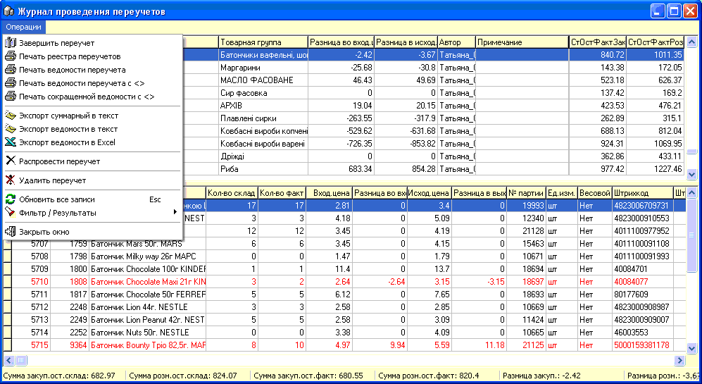
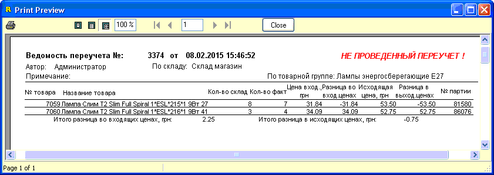

Данный журнал позволяет работать с сохраненными
ранее переучетами - как без корректировки остатков (отображаются красным
цветом), так и с проведенными с корректировкой остатков (черный
цвет).
Окно журнала
переучетов состоит из двух частей: вверху отображаются заголовки переучетов, а
внизу - табличная часть выбранного вверху конкретного переучета.
В нижней части красным цветом показаны позиции,
где кол-во склад<>кол-во факт.
Рассмотрим пункты доступного главного меню
формы.
Завершить переучет - открывает выделенный в
верхней части окна переучет без корректировки остатков (красный).
Печать реестра переучетов - открывает вывод на
печать верхнего списка переучетов, согласно текущего отображения, все или
отобранные по фильтру.
Печать ведомости переучета - открывает вывод на
печать выделенного в верхней части окна переучета (заголовок+табличная часть).
Используется для отчетности.
Печать ведомости переучета с <> -
аналогично предыдущего пункта меню, только выводятся позиции, где кол-во
склад<>кол-во факт. Для примера
рисунок:
Печать сокращенной ведомости с <> -
аналогично предыдущего пункта меню, выводятся строки с расхождением
фактических и партионных остатков, но на печать выводятся только код,
наименование и фактический остаток товара. Вывод в 2 столбца на странице.
Обычно, выдается на руки персоналу для поиска недостающих количеств
товара.
Распровести переучет - отмена изменений сделанных
при проведении переучета с корректировкой остатков, изменение количеств
назад, на ту дельту , на которую они были изменены при проведении сохранения с
корректировкой остатков. Переучет из черного стает красным и теперь он
доступен для его редактирования или удаления.
Вообще, вариант распроводки переучета имеет много
недостатков и необходимо по возможности избегать такового. Связано это с тем,
что остатки товаров - это не статическая, а динамическая вещь и мы возвращаем
остаток в старые партии, которые уже не имеют актуальную цену и пока
занимаемся редактированием этого переучета другой пользователь может
этот остаток продать или переместить. Поэтому, данный пункт доступен только
администраторам и также доступна опция на вкладке "Наценка-Переучет" в
настройках "Создавать переоценку при распроводке/сохранении переучета", что
снижает опасность данных изменений, но все равно стремитесь не распроводить
переучеты, особенно старые.
Удалить переучет - данная опция доступна только
для "красных" переучетов, сохраненных без корректировки остатков.
Фильтр журнала позволяет
отобрать документы с задаными параметрами:
Значения
критериев отбора понятны из их названий.Внизу окна фильтра есть небольшой подсчет "Суммарные результаты
переучетов". Если опция "все" не установлена, то подсчитываются результаты
только по переучетам с корректировкой остатков.